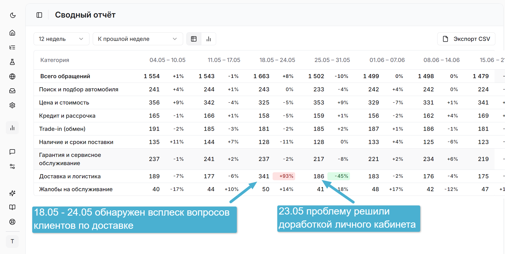

AI-аналитика бизнеса на основе реальных запросов клиентов
Обращения в поддержку — ценный источник инсайтов для развития продукта. Wikibot Pulse автоматически выявляет критические проблемы, приоритизирует задачи для команды и мгновенно предлагает готовые решения, превращая поток жалоб в дорожную карту улучшений.
Начать анализ обращений →
Компании, ориентированные на клиентов, доверяют Wikibot Pulse
Что умеет Wikibot Pulse
Интеллектуальная классификация обращений
Ранее сотрудники прёускали обращения. Теперь AI-агент автоматически определяет категорию проблемы без человеческого фактора. Мгновенно фиксирует данные в вашей Helpdesk-системе — освобождая сотрудников от рутинной разметки тикетов.
Мгновенное определение проблем в продукте
Система выявляет аномалии в потоке обращений. Благодаря визуализированной аналитике вы сразу видите, на каком этапе пользователь сталкивается с трудностями, и устраняете проблемы до того, как они станут массовыми.
Проверка продуктовых гипотез
Объективно измеряйте успех внедрённых фич и исправлений. Отслеживайте динамику обращений по конкретным темам: если после обновления число жалоб в категории снизилось — значит, решение сработало.
Wikibot Pulse помогает системно улучшать ваш продукт. Вы видите, что волнует клиентов, и быстро реагируете на проблемы в бизнесе.
Как выглядит Wikibot Pulse изнутри
Сколько это стоит?
Три тарифа с полным доступом к аналитике и рекомендациям. Стоимость анализа одного диалога — 0,1 кредита.
Стоимость категоризации одного диалога — 0,1 кредита на всех тарифах.
Познакомьтесь с Wikibot Pulse
Создать своего агента - лучший способ оценить платформу и понять, как она закроет ваши задачи по анализу обращений и отчётности
Начать анализ обращений →